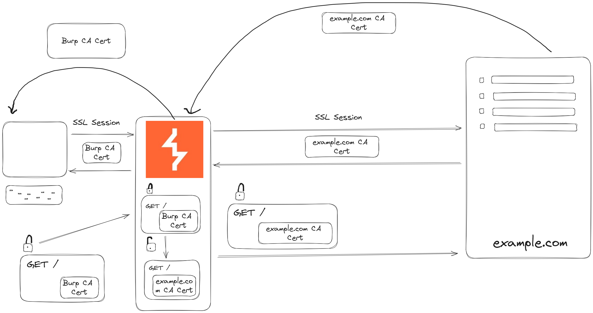
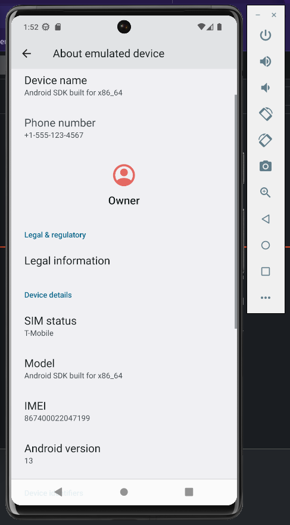
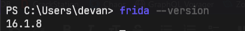
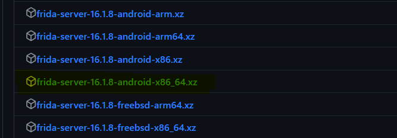
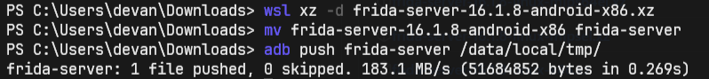
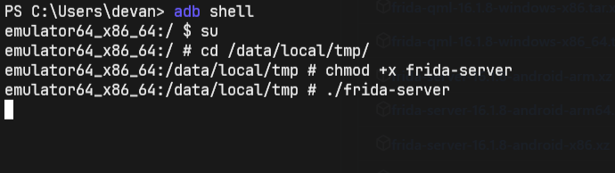
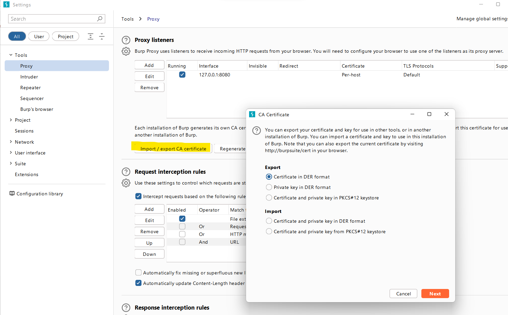
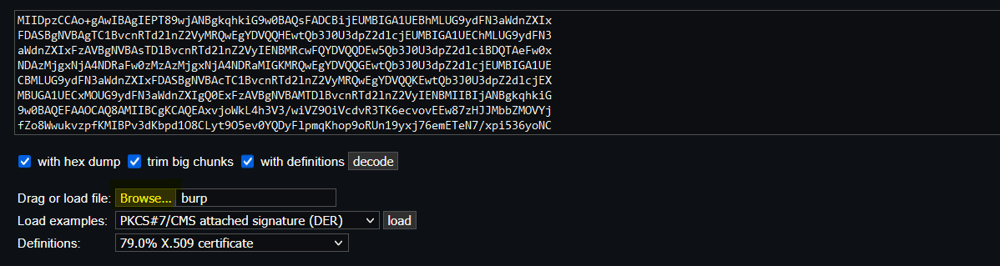
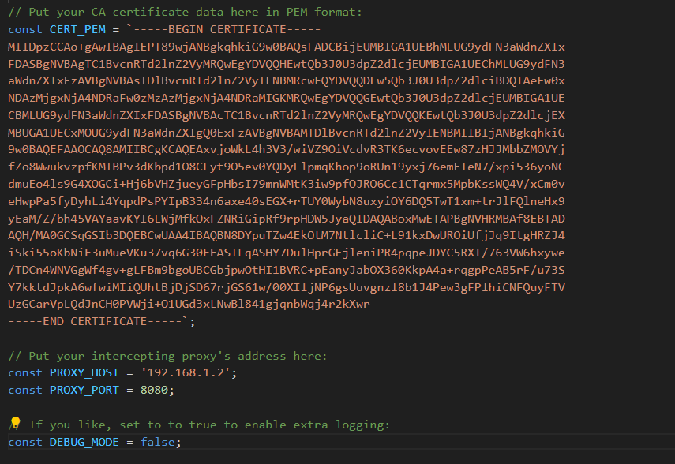
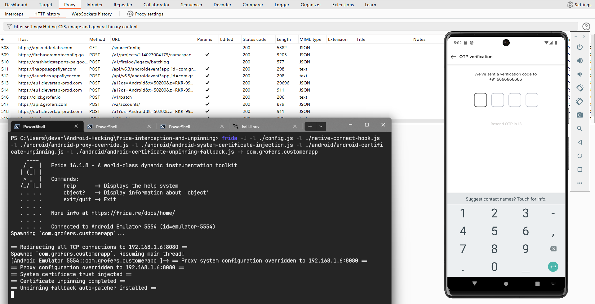

In this blog, we'll explore a simple way to disable SSL pinning in Android apps. But first, let's break down how BurpSuite intercepts HTTPS Traffic, ensuring that beginners can follow along with what we're discussing.
Understanding How BurpSuite Intercepts HTTPS Traffic
Before diving deep into how Burp Suite intercepts HTTPS traffic, it's essential to understand the basics of HTTPS and SSL/TLS protocols. HTTPS encrypts data transmitted between a user's device and a web server. SSL (Secure Sockets Layer) and its successor, TLS (Transport Layer Security), are cryptographic protocols responsible for securing this communication by providing encryption, authentication, and data integrity.
Burp Suite intercepts HTTPS traffic by acting as a proxy between your device and the internet. When you configure your device to route its traffic through Burp Suite, it generates a unique SSL certificate. This certificate is installed on the device, enabling Burp Suite to decrypt and inspect encrypted HTTPS traffic.
When you visit a website or use an app, Burp Suite intercepts the traffic before it reaches its destination. It decrypts the data using its generated SSL certificate, allowing you to view and modify the requests and responses in real time within the Burp Suite interface.
Burp Suite operates with two distinct SSL sessions:
- SSL Session with the Client (Your Device): Burp Suite generates its SSL certificate, which is installed on your device. This creates an SSL session between Burp Suite (acting as a proxy) and your device. This session enables Burp Suite to intercept and decrypt the HTTPS traffic sent from your device.
- SSL Session with the Server (Website or Application): Simultaneously, Burp Suite initiates a separate SSL session with the destination server (website or application). It creates a secure connection using the server's SSL certificate to ensure that the intercepted data can be forwarded securely after inspection or modification.

What is SSL Pinning
SSL pinning is a security technique used by apps to prevent unauthorized interception of their HTTPS traffic, aiming to enhance security by ensuring that communication occurs only with specific trusted servers.
SSL pinning, also known as certificate pinning, enhances this security by storing a specific server's SSL certificate to the app, essentially 'pinning' it. Instead of trusting any valid certificate from any certificate authority, SSL pinning mandates that the app communicates only with predefined certificates or public keys.
Disabling SSL Pinning on Blinkit
In this demonstration, we'll attempt to disable SSL Pinning in an APK of Blinkit. I'll use an emulator from Android Studio, and I have installed Android 13 on the emulator device.

To bypass SSL Pinning, we'll use Frida. First, install Frida on your device by running these commands:
pip install frida-tools
pip install fridaTo check if it's installed properly, use frida --version.

Remember this version number; it's crucial for downloading the matching Frida server. Head to the Frida release page at https://github.com/frida/frida/releases/ and get the Frida server that matches your Frida version and your Android emulator's architecture.
In my situation, my Frida version was 16.1.8, and I needed the x86 architecture. So, I downloaded the highlighted Frida-Server shown in the image below.

Extract the Frida Server using a tool you like. I used WSL. Then, use ADB to push it into your Android emulator using the below command.

Next, use the ADB shell to access the emulator and initiate the Frida server.

To confirm that the Frida server is running properly, enter this command: frida-ps -U
Now that Frida is set up, open Burp Suite and set it up to listen on your network and export the CA certificate from Burp Suite's proxy settings.

Next, clone this repository: https://github.com/httptoolkit/frida-interception-and-unpinning. This repo by HTTP toolkit contains Frida scripts designed to do everything required for fully automated HTTPS MitM interception on mobile devices.
Open the "config.js" file in the downloaded repository. You need to add some information there, like the CA certificate in PEM format and the details of our listeners. You get your listener details from proxy settings.
Burp Suite usually exports the CA certificate in a format called DER. To convert it into PEM format, use a tool available at http://lapo.it/asn1js/. Upload your CA certificate there, and it'll give you the CA certificate in PEM format. Then, add this PEM-formatted certificate to the "config.js" file.

Once you've added your PEM certificate, your config file should look similar to the image below

Now, execute the following command:
frida -U -l ./config.js -l ./native-connect-hook.js -l ./android/android-proxy-override.js -l ./android/android-system-certificate-injection.js -l ./android/android-certificate-unpinning.js -l ./android/android-certificate-unpinning-fallback.js -f com.grofers.customerappThis command hooks all the necessary agents to bypass SSL pinning. Using the -f flag, we specify our target app as com.grofers.customerapp, and -U indicates that our device is connected via USB.
This command will spawn the blinkit app and you'll observe its requests appearing in the Burp Suite history tab.
